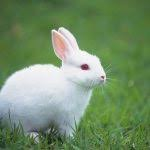
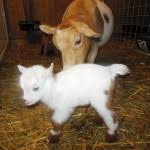

Dogs
Dog is one of the pet animals.A baby dog is called a pup or puppy. A dog is called a puppy until it is about one year old. Dogs are sometimes referred to as "man's best friend" because they are kept as domestic pets and are usually loyal and like being around humans
Cats
Cats are also one of the pet animals.Cats, also called domestic cats (Felis catus), are small, carnivorous (meat-eating) mammals, of the family Felidae. Domestic cats are often called house cats when kept as indoor pets. Cats have been domesticated (tamed) for nearly 10,000 years. They are one of the most popular pets in the world.
Rabbits
Rabbits are also one of the pet animals.Rabbits are small mammals with fluffy, short tails, whiskers and distinctive long ears. ... There are 11 genera within the family, but the term “true hares” refers only to species in the genus Lepus; all others are rabbits.
Goats
Goats are also one of the pet animals.The goat is a member of the animal family Bovidae and the goat—antelope subfamily Caprinae, meaning it is closely related to the sheep. There are over 300 distinct breeds of goat.